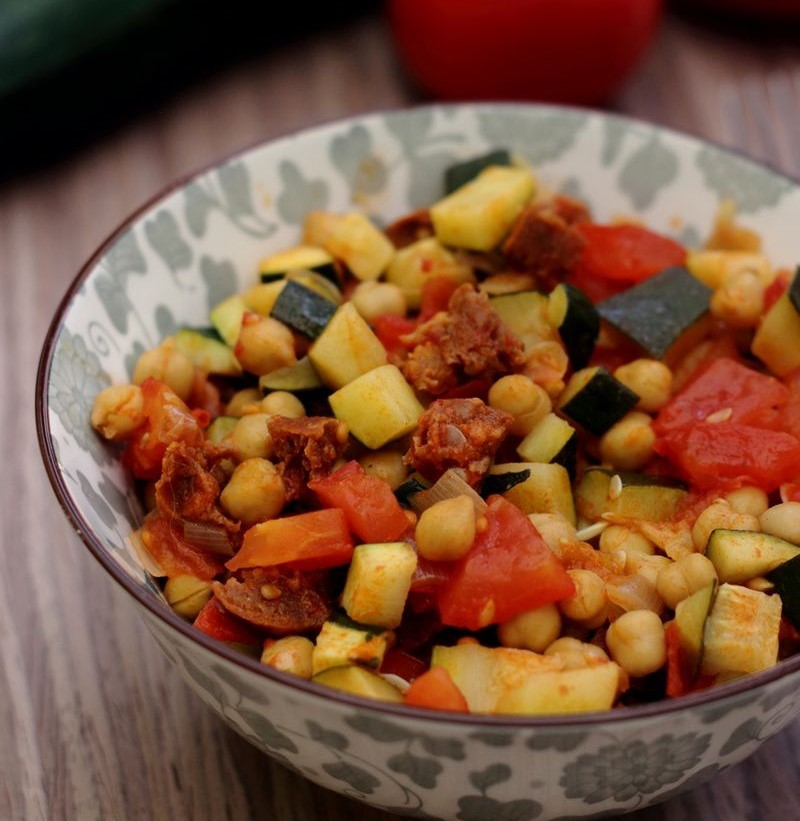

Poêlée de Courgettes, Pois chiche et Chorizo
Un délice estival

Ingrédients
- 1 boite de 400 gr de pois chiches (265 gr égouttés)
- 2 courgettes
- 2 tomates
- 1 échalote
- 50 gr de chorizo fort
- Une douzaine de feuilles de basilic
Recette
- Laver et sécher les courgettes. Les couper en petits dés.
- Faire chauffer un peu d’huile d’olive dans une sauteuse. Ajouter les dés de courgettes. Saler et poivrer. Couvrir et laisser cuire 20 à 25 minutes à feu moyen / doux. Mettre de côté.
- Éplucher et ciseler l’échalote.
- Couper le chorizo en petits dés.
- Éplucher les tomates.
- Rincer les pois chiches.
- Dans la même sauteuse, mettre les dés de chorizo et l’échalote ciselée. Faire revenir à feu vif 3 ou 4 minutes puis ajouter les dés de tomate. Saler. Laisser cuire 5 minutes.
- Ajouter ensuite les pois chiches, les courgettes cuites. Mélanger bien, couvrir et cuire une quinzaine de minutes à feu doux.
- Retirer du feu, ajouter le basilic. Goûter et rectifier l’assaisonnement si nécessaire.